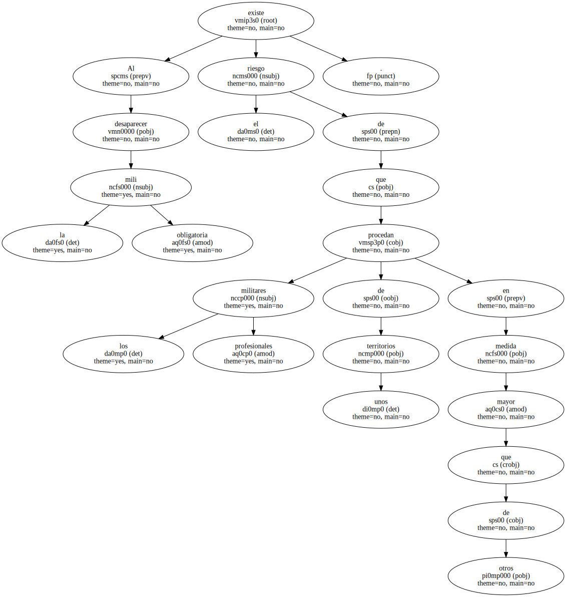
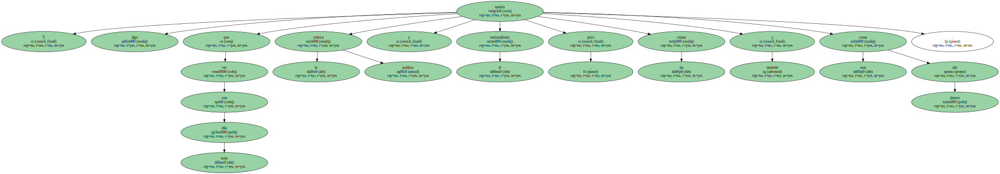
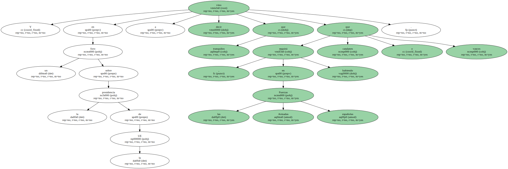
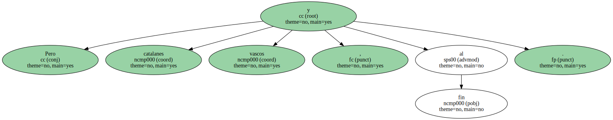
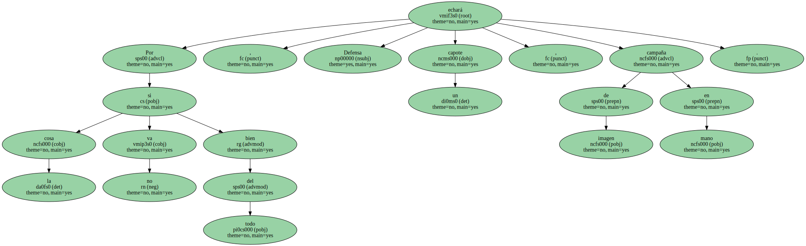

Al desaparecer la mili obligatoria existe el riesgo de que los militares profesionales procedan de unos territorios en mayor medida que de otros.
Y algo tendrá que ver con todo ello la cultura política y el nacionalismo , pero también las rentas y esas cosas del dinero.
Ayer , el ministro de Defensa afrontó el asunto con su habitual fair play y claridad.

Y en un foro sobre la presidencia de la UE vino a decir que tranquilos , que en las Fuerzas Armadas españolas seguirá habiendo catalanes y vascos.
Más catalanes que vascos , en proporción , precisó.

Pero catalanes y vascos , al fin.
Por si la cosa no va del todo bien , Defensa echará un capote , campaña de imagen en mano.
Y ya se sabe que si algo hace bien Federico Trillo es comunicar , con fuerza y con huevos ... ¿ O no ?.